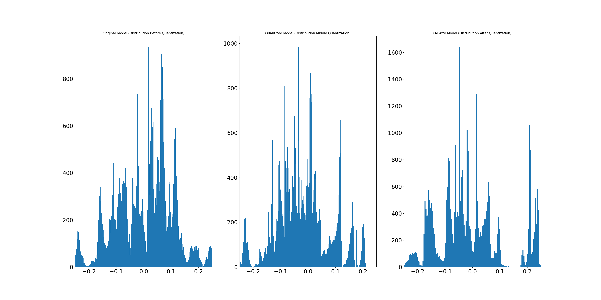

[2023 Convergence Project] Unicorn
Project Overview
- Time-series data like building energy usage has high volatility, leading to low prediction accuracy, and deep learning models become more complex as the model size increases.
- Applied Quantization Aware Training (QAT) to the LSTM model, generating quantized weights during training and using them to build an optimized model.
Expected Outcomes
- Improved accuracy: QAT reduces overfitting and enhances generalization performance.
- Improved training speed: Quantized weights reduce computation cost and speed up training.
- Model lightweighting: Reduced memory usage, making it suitable for mobile/embedded systems.
Languages / Development Environment
- Python
- Linux, MobaXterm
Achievements
- 1 SCI paper: Q-LAtte: Quantized Attention-Based Time Series Forecasting in Building Energy Applications (IEEE Access, 2024)
- 1 Patent Application:

Project Timeline
June 2023 ~ December 2023
← Back to Projects